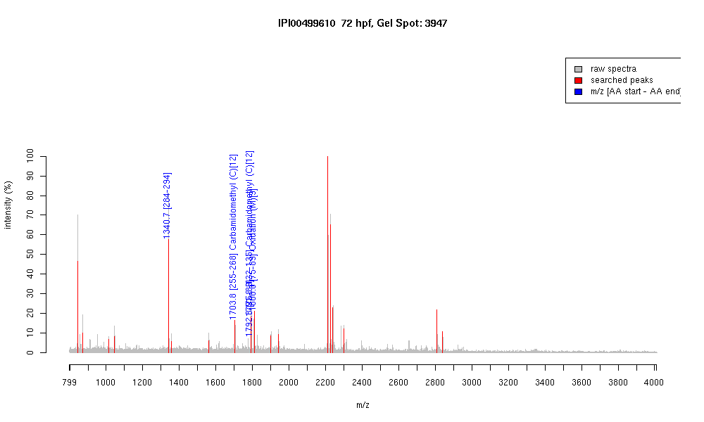

| Name | "Similar to protein phosphatase 2(Formerly 2A), catalytic subunit, alpha isoform" |
|---|---|
| MW | 35453.4 |
| PI | 5.39 |
| Mascot Protein Score | 69 |
| Masses (matched / unmatched) | 4 / 21 |

| Peptide | MZ (calc) | MZ (observed) | Error (DA) | Error (PPM) | Start | Stop | Modifications |
|---|---|---|---|---|---|---|---|
| YSFLQFDPAPR | 1340.6633 | 1340.6631 | -0.0002 | 0 | 284 | 294 | |
| NVVTIFSAPNYCYR | 1703.8209 | 1703.8114 | -0.0095 | -6 | 255 | 268 | Carbamidomethyl (C)[12] |
| QITQVYGFYDECLR | 1791.837 | 1791.8367 | -0.0003 | 0 | 122 | 135 | Carbamidomethyl (C)[12] |
| SPDTNYLFMGDYVDR | 1792.7847 | 1792.8424 | 0.0577 | 32 | 75 | 89 | |
| SPDTNYLFMGDYVDR | 1808.7795 | 1808.7974 | 0.0179 | 10 | 75 | 89 | |
| SPDTNYLFMGDYVDR | 1808.7795 | 1808.7974 | 0.0179 | 10 | 75 | 89 | Oxidation (M)[9] |